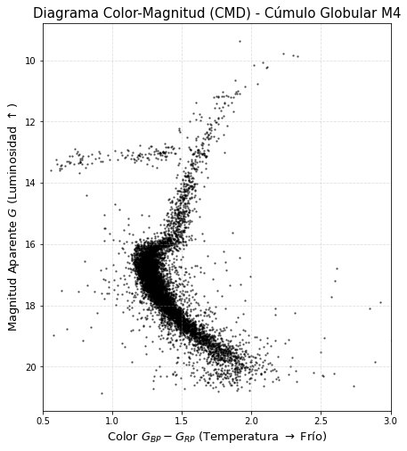
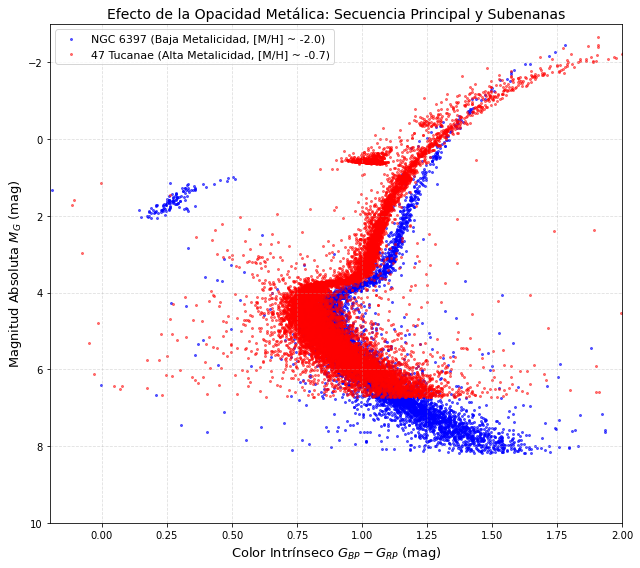
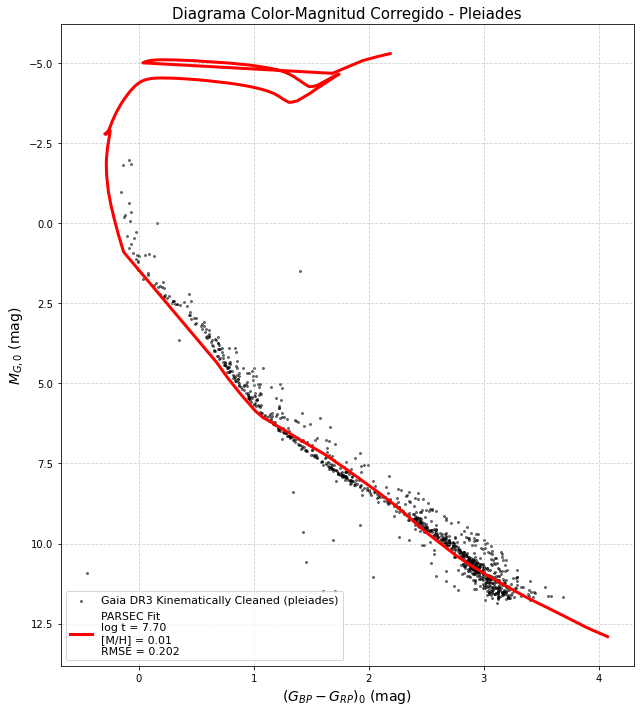
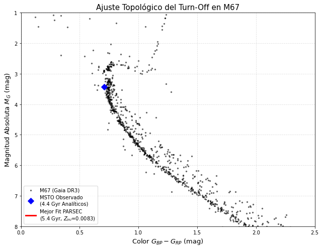

Clase 6: Evolución Estelar#
Objetivos#
El Diagrama HR: El Espacio de Fase de la Evolución Estelar.
El Rol de la Metalicidad (\(Z\)) y la Opacidad.
Cronometría Estelar: El Main Sequence Turn-Off (MSTO).
1. El Diagrama HR: El Espacio de Fase de la Evolución Estelar#
El Diagrama HR es el análogo astronómico de la tabla periódica. Nos permite clasificar el estado termodinámico y evolutivo de una estrella.
1.1 El Plano Teórico (\(\log L\) vs. \(\log T_{eff}\))#
Teóricamente, una estrella en equilibrio térmico e hidrostático irradia energía como un cuerpo negro esférico. La Ley de Stefan-Boltzmann vincula la luminosidad intrínseca (\(L\)), el radio estelar (\(R\)) y la temperatura efectiva de la fotósfera (\(T_{eff}\)):
Tomando logaritmos a ambos lados, obtenemos la ecuación de las líneas de radio constante en el plano HR teórico:
En el plano teórico, la masa de la estrella determina su posición exacta a lo largo de una franja diagonal conocida como la Secuencia Principal (MS), gobernada por la relación masa-luminosidad (\(L \propto M^{3.5}\)).
1.2 El Plano Observacional (\(M_V\) vs. Índice de Color)#
Nuestros telescopios no miden \(L\) ni \(T_{eff}\) directamente. Miden flujos fotónicos a través de filtros (ej. fotometría \(B, V, G, u, r\)).
De Luminosidad a Magnitud Absoluta:
\[M_\lambda = -2.5 \log\left(\frac{L_\lambda}{L_0}\right)\]De Temperatura a Color: Por la Ley de Planck y el desplazamiento de Wien, una estrella caliente emite más fotones azules que rojos. El índice de color (la resta de dos magnitudes, ej. \(B-V\) o \(G_{BP}-G_{RP}\)) es un proxy directo (pero no lineal) del inverso de la temperatura.
La Transformación Observacional: Para graficar el diagrama observacional intrínseco, debemos corregir las magnitudes aparentes (\(m_\lambda\)) midiendo la distancia (\(d\) en parsecs) mediante el módulo de distancia y corrigiendo la extinción interestelar (\(A_\lambda\)) producida por el polvo en la línea de visión:
El color intrínseco se corrige por el enrojecimiento (\(E\)): $\((B-V)_0 = (B-V)_{obs} - E(B-V)\)$
import subprocess
import pandas as pd
import matplotlib.pyplot as plt
import urllib.parse
# Consulta ADQL a Gaia DR3 para el cúmulo M4 (NGC 6121)
adql_m4 = "SELECT phot_g_mean_mag, bp_rp FROM gaiadr3.gaia_source WHERE 1=CONTAINS(POINT('ICRS', ra, dec), CIRCLE('ICRS', 245.89, -26.52, 0.2)) AND parallax BETWEEN 0.4 AND 0.6 AND pmra BETWEEN -15 AND -10 AND pmdec BETWEEN -22 AND -16"
url_tap = "https://gea.esac.esa.int/tap-server/tap/sync"
payload = {'request': 'doQuery', 'lang': 'adql', 'format': 'csv', 'query': adql_m4}
print("Descargando fotometría de M4...")
subprocess.run(["wget", "--post-data", urllib.parse.urlencode(payload), "-O", "m4_cmd.csv", url_tap, "-q"])
df_m4 = pd.read_csv("m4_cmd.csv")
plt.figure(figsize=(7, 8))
plt.scatter(df_m4['bp_rp'], df_m4['phot_g_mean_mag'], s=2, c='black', alpha=0.5)
plt.gca().invert_yaxis() # Convención: Mayor luminosidad (menor magnitud) arriba
plt.xlabel(r'Color $G_{BP} - G_{RP}$ (Temperatura $\rightarrow$ Frío)', fontsize=13)
plt.ylabel(r'Magnitud Aparente $G$ (Luminosidad $\uparrow$)', fontsize=13)
plt.title('Diagrama Color-Magnitud (CMD) - Cúmulo Globular M4', fontsize=15)
plt.xlim(0.5,3)
plt.grid(True, ls='--', alpha=0.4)
plt.show()
Descargando fotometría de M4...

2. El Rol de la Metalicidad (\(Z\)) y la Opacidad#
En astrofísica, cualquier elemento más pesado que el Helio se denomina “metal”. La fracción de masa estelar se divide en Hidrógeno (\(X\)), Helio (\(Y\)) y metales (\(Z\)), tal que \(X + Y + Z = 1\). Para el Sol, \(Z \approx 0.014\) (el 1.4%).
A pesar de ser una fracción minúscula, \(Z\) domina por completo la arquitectura exterior de la estrella a través de la Opacidad (\(\kappa\)).
2.1 La Ecuación de Transporte Radiativo#
El gradiente de temperatura en el interior de una estrella está gobernado por qué tan “opaco” es el material al paso de los fotones:
donde \(\kappa\) es la opacidad de \(Rosseland\). En las capas exteriores, la opacidad dominante es la de \(Kramers\) (transiciones bound-free y free-free), que depende de la densidad y la temperatura:
2.2 Line Blanketing y el Efecto Observacional de \(Z\)#
Efecto Estructural: Si un cúmulo es “rico en metales” (alto \(Z\), como los cúmulos abiertos), sus estrellas tienen una alta concentración de electrones ligados que absorben fotones UV y ópticos. Esta alta opacidad en la envoltura bloquea la radiación, obligando a la estrella a expandirse para mantener el equilibrio. Mayor radio (\(R \uparrow\)) con misma luminosidad implica menor temperatura (\(T_{eff} \downarrow\)). Las estrellas ricas en metales son más rojas y frías.
Subenanas (Subdwarfs): Si un cúmulo es “pobre en metales” (bajo \(Z\), como los cúmulos globulares del halo galáctico), la radiación escapa fácilmente. Las estrellas son más compactas y calientes, desplazando la Secuencia Principal hacia la izquierda (azul) en el diagrama HR observacional.
Line Blanketing (El filtro \(u\)): Los metales absorben abrumadoramente en el espectro ultravioleta/azul. Utilizando fotometría del SDSS (filtro \(u\)), el índice de color \(u-g\) es extremadamente sensible a \(Z\). Esto nos permite clasificar espectralmente las poblaciones sin tomar un solo espectro.
2.3 Comparación de \(Z\) con el Telescopio Espacial Hubble (HST) y SDSS#
Para ilustrar esto, consultaremos el “HST ACS Globular Cluster Treasury” (Sarajedini et al. 2007) a través del endpoint TAP de VizieR, un repositorio maestro de datos de la NASA/ESA. Compararemos 47 Tucanae (Rico en metales, halo interior, \([Fe/H]\approx −0.7\)) y NGC 6397 (Muy pobre en metales, halo exterior, \([Fe/H]\approx−2.0\)). Ambos tienen edades similares (\(\sim12-13\) Gyr), aislando el efecto puro de la metalicidad.
import subprocess
import pandas as pd
import numpy as np
import matplotlib.pyplot as plt
import urllib.parse
def fetch_cluster_clean(ra, dec, radius, plx_center, plx_tol, pmra_val, pmdec_val, pm_tol, dm, name):
"""
Descarga segura filtrando estrictamente por movimiento propio y aplicando
un Módulo de Distancia (DM) fijo para evitar la dispersión por errores de paralaje individual.
"""
query = f"""
SELECT phot_g_mean_mag, bp_rp
FROM gaiadr3.gaia_source
WHERE CONTAINS(POINT('ICRS', ra, dec), CIRCLE('ICRS', {ra}, {dec}, {radius})) = 1
AND parallax BETWEEN {plx_center - plx_tol} AND {plx_center + plx_tol}
AND pmra BETWEEN {pmra_val - pm_tol} AND {pmra_val + pm_tol}
AND pmdec BETWEEN {pmdec_val - pm_tol} AND {pmdec_val + pm_tol}
AND phot_g_mean_mag < 20.0
"""
url = "https://gea.esac.esa.int/tap-server/tap/sync"
payload = {'request': 'doQuery', 'lang': 'adql', 'format': 'csv', 'query': query}
fname = f"{name}.csv"
print(f"Descargando miembros limpios para {name}...")
subprocess.run(["wget", "--post-data", urllib.parse.urlencode(payload), "-O", fname, url, "-q"])
df = pd.read_csv(fname)
# Conversión a Magnitud Absoluta usando Módulo de Distancia fijo (DM = 5*log(d) - 5)
df['M_G'] = df['phot_g_mean_mag'] - dm
return df
print("--- Extracción de Cúmulos Globulares con Filtro Cinemático Estricto ---")
# 1. 47 Tucanae (NGC 104): [M/H] ~ -0.7 (Más metálica), Distancia ~ 4.5 kpc (DM ~ 13.27)
# Centro: RA=6.023, Dec=-72.081 | Plx ~ 0.22 mas | PMra ~ 5.2, PMdec ~ -2.5
df_47tuc = fetch_cluster_clean(
ra=6.023, dec=-72.081, radius=0.3,
plx_center=0.22, plx_tol=0.08,
pmra_val=5.2, pmdec_val=-2.5, pm_tol=1.2,
dm=13.27, name="47tuc_clean"
)
# 2. NGC 6397: [M/H] ~ -2.0 (Pobre en metales / Subenanas), Distancia ~ 2.3 kpc (DM ~ 11.82)
# Centro: RA=265.18, Dec=-53.67 | Plx ~ 0.43 mas | PMra ~ 3.3, PMdec ~ -17.6
df_n6397 = fetch_cluster_clean(
ra=265.18, dec=-53.67, radius=0.25,
plx_center=0.43, plx_tol=0.10,
pmra_val=3.3, pmdec_val=-17.6, pm_tol=1.5,
dm=11.82, name="ngc6397_clean"
)
# ==========================================
# VISUALIZACIÓN FÍSICAMENTE CONSISTENTE
# ==========================================
plt.figure(figsize=(9, 8))
# NGC 6397 (Baja metalicidad) debe quedar a la izquierda (más azul)
plt.scatter(df_n6397['bp_rp'], df_n6397['M_G'], s=4, c='blue', alpha=0.6,
label='NGC 6397 (Baja Metalicidad, [M/H] ~ -2.0)')
# 47 Tucanae (Alta metalicidad) debe quedar a la derecha (más roja)
plt.scatter(df_47tuc['bp_rp'], df_47tuc['M_G'], s=4, c='red', alpha=0.5,
label='47 Tucanae (Alta Metalicidad, [M/H] ~ -0.7)')
plt.gca().invert_yaxis()
plt.xlabel(r'Color Intrínseco $G_{BP} - G_{RP}$ (mag)', fontsize=13)
plt.ylabel(r'Magnitud Absoluta $M_G$ (mag)', fontsize=13)
plt.title('Efecto de la Opacidad Metálica: Secuencia Principal y Subenanas', fontsize=14)
plt.legend(fontsize=11, loc='upper left')
plt.xlim(-0.2, 2.0)
plt.ylim(10.0, -3.0)
plt.grid(True, ls='--', alpha=0.4)
plt.tight_layout()
plt.show()
print("\n--- Conclusión Física ---")
print("Al fijar los módulos de distancia y limpiar el campo con movimientos propios,")
print("se aprecia claramente que NGC 6397 (azul) se desplaza hacia la izquierda en color")
print("debido a su baja opacidad atmosférica (menor bloqueo de fotones),")
print("formando la clásica secuencia de subenanas por debajo de 47 Tuc (roja).")
--- Extracción de Cúmulos Globulares con Filtro Cinemático Estricto ---
Descargando miembros limpios para 47tuc_clean...
Descargando miembros limpios para ngc6397_clean...

--- Conclusión Física ---
Al fijar los módulos de distancia y limpiar el campo con movimientos propios,
se aprecia claramente que NGC 6397 (azul) se desplaza hacia la izquierda en color
debido a su baja opacidad atmosférica (menor bloqueo de fotones),
formando la clásica secuencia de subenanas por debajo de 47 Tuc (roja).
3. Cronometría Estelar: El Main Sequence Turn-Off (MSTO)#
El Diagrama HR nos da el reloj más preciso del universo. ¿Cómo calculamos la edad de un cúmulo estelar?
3.1 Derivación de la Edad de la Secuencia Principal#
El tiempo que una estrella pasa en la MS (\(t_{MS}\)) es proporcional a sus reservas de combustible (\(M\)) dividido por el ritmo al que lo consume (\(L\)): $\(t_{MS} \propto \frac{M}{L}\)\( Inyectando la relación masa-luminosidad empírica (\)L \propto M^{3.5}\(): \)\(t_{MS} \propto \frac{M}{M^{3.5}} = M^{-2.5}\)\( Normalizando con los valores solares (\)t_\odot \approx 10 \text{ Gyr}\(): \)\(t_{MS} \approx 10 \text{ Gyr} \left( \frac{M}{M_\odot} \right)^{-2.5}\)$
3.2 El Punto de Quiebre (MSTO)#
A medida que el cúmulo envejece, las estrellas más masivas (que están más arriba en el diagrama HR) agotan su hidrógeno y abandonan la MS hacia la rama de las gigantes rojas. El punto exacto en el diagrama HR donde la secuencia principal se “apaga” o quiebra se conoce como Main Sequence Turn-Off (MSTO). La edad del cúmulo es exactamente igual al \(t_{MS}\) de la estrella que se encuentra actualmente en el Turn-Off.
3.3 Relación Directa: Edad vs. Luminosidad del MSTO#
Sustituyendo la masa por la luminosidad usando \(M \propto L^{1/3.5}\): $\(t_{cúmulo} \approx 10 \text{ Gyr} \left( \frac{L_{TO}}{L_\odot} \right)^{-5/7}\)\( Expresado en términos de Magnitud Bolométrica Absoluta (\)M_{bol} = -2.5 \log L/L_\odot + M_{bol,\odot}$), esto demuestra que la magnitud del Turn-Off se correlaciona analíticamente con el logaritmo de la edad del cúmulo.
Caveat Pedagógico: Existe una degeneración edad-metalicidad. Un cúmulo más viejo se ve más rojo (porque el MSTO baja a estrellas de menor masa). Pero un cúmulo más rico en metales también se ve más rojo (por la opacidad térmica). Romper esta degeneración requiere combinar el MSTO con análisis espectroscópicos o el uso inteligente de fotometría infrarroja frente a fotometría UV (Line Blanketing).
import numpy as np
import pandas as pd
import matplotlib.pyplot as plt
from astroquery.gaia import Gaia
from scipy.spatial import cKDTree
# ==========================================
# 1. LECTURA DE ISOCRONAS PARSEC
# ==========================================
def leer_isocronas(archivo_parsec):
columnas = [
"Zini", "MH", "logAge", "Mini", "int_IMF", "Mass", "logL", "logTe", "logg",
"label", "McoreTP", "C_O", "period0", "period1", "period2", "period3",
"period4", "pmode", "Mloss", "tau1m", "X", "Y", "Xc", "Xn", "Xo",
"Cexcess", "Z", "mbolmag", "Gmag", "G_BPmag", "G_RPmag"
]
return pd.read_csv(archivo_parsec, sep=r'\s+', comment='#', names=columnas)
# ==========================================
# 2. DESCARGA CON FILTRADO CINEMÁTICO (PROPER MOTION)
# ==========================================
def descargar_datos_cumulo(nombre_cumulo='pleiades'):
"""
Consulta ADQL mejorada: Filtra por movimiento propio (pmra, pmdec)
para eliminar las estrellas de campo y quedarse solo con los miembros del cúmulo.
"""
if nombre_cumulo.lower() == 'pleiades':
# Las Pléyades se mueven juntas a pmra ~ 20, pmdec ~ -45
query = """
SELECT source_id, phot_g_mean_mag, phot_bp_mean_mag, phot_rp_mean_mag, parallax
FROM gaiadr3.gaia_source
WHERE CONTAINS(POINT('ICRS', ra, dec), CIRCLE('ICRS', 56.75, 24.11, 2.5)) = 1
AND parallax_over_error > 10
AND phot_g_mean_mag < 17.5
AND pmra BETWEEN 15 AND 25
AND pmdec BETWEEN -55 AND -35
"""
else:
raise ValueError("Cúmulo no configurado en este script.")
print(f"Descargando datos limpios para {nombre_cumulo} desde Gaia DR3...")
return Gaia.launch_job(query).get_results().to_pandas()
# ==========================================
# 3. AJUSTE ROBUSTO (MEDIANA) CON REPORTE DE ERROR
# ==========================================
def ajustar_isocrona_robusta(df_obs, df_iso, A_G=0.1, E_BP_RP=0.05):
"""
Ajuste bidimensional robusto. Utiliza la mediana de las distancias para
ignorar estrellas rezagadas y aplica corrección de extinción.
"""
df_obs = df_obs.dropna(subset=['phot_g_mean_mag', 'phot_bp_mean_mag', 'phot_rp_mean_mag', 'parallax'])
# 1. Distancia y corrección de extinción interestelar
distancia_pc = 1000.0 / df_obs['parallax']
obs_mag_abs = (df_obs['phot_g_mean_mag'] - 5 * np.log10(distancia_pc) + 5) - A_G
obs_color = (df_obs['phot_bp_mean_mag'] - df_obs['phot_rp_mean_mag']) - E_BP_RP
# 2. Estandarización para el k-d tree
std_mag = np.std(obs_mag_abs)
std_color = np.std(obs_color)
obs_points = np.column_stack((obs_color / std_color, obs_mag_abs / std_mag))
mejor_edad, mejor_metalicidad, mejor_isocrona = None, None, None
min_error_mediano = np.inf
metalicidades_disponibles = df_iso['Z'].unique()
print(f"Optimizando sobre {len(metalicidades_disponibles)} metalicidades...")
for mh in metalicidades_disponibles:
df_iso_mh = df_iso[df_iso['Z'] == mh]
for edad in df_iso_mh['logAge'].unique():
iso_edad = df_iso_mh[df_iso_mh['logAge'] == edad]
# Normalizar isocrona teórica
iso_color = iso_edad['G_BPmag'] - iso_edad['G_RPmag']
iso_mag = iso_edad['Gmag']
iso_points = np.column_stack((iso_color / std_color, iso_mag / std_mag))
# Evaluar ajuste con k-d tree
tree = cKDTree(iso_points)
distancias, _ = tree.query(obs_points)
# CAMBIO CLAVE: Usar la mediana en lugar de la suma de cuadrados
error_mediano = np.median(distancias)
if error_mediano < min_error_mediano:
min_error_mediano = error_mediano
mejor_edad = edad
mejor_metalicidad = mh
mejor_isocrona = iso_edad
# Calcular RMSE final solo para reporte, basado en el mejor modelo
iso_color = mejor_isocrona['G_BPmag'] - mejor_isocrona['G_RPmag']
iso_mag = mejor_isocrona['Gmag']
best_iso_points = np.column_stack((iso_color / std_color, iso_mag / std_mag))
distancias_finales, _ = cKDTree(best_iso_points).query(obs_points)
rmse_final = np.sqrt(np.mean(distancias_finales**2))
print(f"\n--- RESULTADOS DEL AJUSTE ---")
print(f"Metalicidad Z óptima: {mejor_metalicidad}")
print(f"log(Age/yr) óptima : {mejor_edad:.2f} (~{10**mejor_edad / 1e6:.1f} millones de años)")
print(f"Error Mediano Est. : {min_error_mediano:.4f}")
print(f"RMSE Global : {rmse_final:.4f}")
return mejor_edad, mejor_metalicidad, rmse_final, mejor_isocrona, obs_color, obs_mag_abs
# ==========================================
# 4. GRAFICACIÓN CON REPORTE DE ERROR
# ==========================================
def graficar_cmd(obs_color, obs_mag_abs, mejor_iso, nombre_cumulo, log_edad, mh_optimo, error_rmse):
plt.figure(figsize=(9, 10))
# Secuencia principal limpia
plt.scatter(obs_color, obs_mag_abs, s=4, c='k', alpha=0.5, label=f'Gaia DR3 Kinematically Cleaned ({nombre_cumulo})')
# Isocrona ajustada
iso_color = mejor_iso['G_BPmag'] - mejor_iso['G_RPmag']
iso_mag = mejor_iso['Gmag']
etiqueta = (f'PARSEC Fit\n'
f'log t = {log_edad:.2f}\n'
f'[M/H] = {mh_optimo}\n'
f'RMSE = {error_rmse:.3f}')
plt.plot(iso_color, iso_mag, color='red', linewidth=3.0, label=etiqueta)
plt.gca().invert_yaxis()
plt.xlabel(r'$(G_{BP} - G_{RP})_0$ (mag)', fontsize=14)
plt.ylabel(r'$M_{G, 0}$ (mag)', fontsize=14)
plt.title(f'Diagrama Color-Magnitud Corregido - {nombre_cumulo.capitalize()}', fontsize=15)
plt.legend(frameon=True, loc='lower left', fontsize=11)
plt.grid(True, linestyle='--', alpha=0.6)
plt.tight_layout()
plt.show()
# ==========================================
# EJECUCIÓN
# ==========================================
if __name__ == "__main__":
CUMULO = 'pleiades'
ARCHIVO_PARSEC = 'isocronas.dat'
# Valores empíricos de extinción para las Pléyades
EXTINCION_G = 0.12
EXCESO_COLOR = 0.05
df_iso = leer_isocronas(ARCHIVO_PARSEC)
df_obs = descargar_datos_cumulo(CUMULO)
edad, mh, error_rmse, iso, color, mag = ajustar_isocrona_robusta(
df_obs, df_iso, A_G=EXTINCION_G, E_BP_RP=EXCESO_COLOR
)
graficar_cmd(color, mag, iso, CUMULO, edad, mh, error_rmse)
Descargando datos limpios para pleiades desde Gaia DR3...
Optimizando sobre 3263 metalicidades...
--- RESULTADOS DEL AJUSTE ---
Metalicidad Z óptima: 0.01
log(Age/yr) óptima : 7.70 (~50.1 millones de años)
Error Mediano Est. : 0.0815
RMSE Global : 0.2021

4. Taller Computacional: Extracción Multi-Base (Gaia + SDSS)#
Para superar el “sesgo de una sola base de datos”, este script combina la astrometría impecable de Gaia DR3 con la fotometría profunda de Sloan Digital Sky Survey (SDSS DR12) utilizando el protocolo TAP de VizieR. Extraeremos los datos del famoso cúmulo abierto M67 (\(\sim 4 \text{ Gyr}\), metalicidad solar) y mediremos su Turn-Off.
import numpy as np
import pandas as pd
import matplotlib.pyplot as plt
from astroquery.gaia import Gaia
from astroquery.vizier import Vizier
import astropy.coordinates as coord
import astropy.units as u
# ==========================================
# FUNCIONES DE AJUSTE TOPOLÓGICO (MSTO MATCHING)
# ==========================================
def leer_isocronas(archivo_parsec):
columnas = [
"Zini", "MH", "logAge", "Mini", "int_IMF", "Mass", "logL", "logTe", "logg",
"label", "McoreTP", "C_O", "period0", "period1", "period2", "period3",
"period4", "pmode", "Mloss", "tau1m", "X", "Y", "Xc", "Xn", "Xo",
"Cexcess", "Z", "mbolmag", "Gmag", "G_BPmag", "G_RPmag"
]
return pd.read_csv(archivo_parsec, sep=r'\s+', comment='#', names=columnas)
def ajustar_por_msto(df_obs, df_iso, E_BP_RP=0.04):
"""
Identifica el codo del MSTO en las observaciones filtrando Blue Stragglers
y busca la isocrona cuyo MSTO teórico minimice la distancia euclidiana hacia él.
"""
# 1. IDENTIFICACIÓN DEL MSTO EMPÍRICO ROBUSTO
# Buscamos en la franja de magnitud donde ocurre el Turn-Off
mask_msto = (df_obs['M_G'] > 2.5) & (df_obs['M_G'] < 4.0)
df_msto = df_obs[mask_msto]
# Usamos el percentil 5 para ignorar ruido y estrellas rezagadas azules extremas
msto_color_emp = df_msto['bp_rp'].quantile(0.05)
# Para la magnitud, promediamos las estrellas que yacen exactamente sobre ese límite de color
estrellas_en_codo = df_msto[np.abs(df_msto['bp_rp'] - msto_color_emp) < 0.05]
msto_mag_emp = estrellas_en_codo['M_G'].median()
# 2. MATCHING TEÓRICO
# Filtramos enanas blancas y remanentes
df_iso_clean = df_iso[df_iso['label'] <= 3].copy()
resultados_fit = []
for z_val in df_iso_clean['Z'].unique():
df_iso_z = df_iso_clean[df_iso_clean['Z'] == z_val]
for edad in df_iso_z['logAge'].unique():
iso_edad = df_iso_z[df_iso_z['logAge'] == edad]
# Identificamos el MSTO teórico (el punto estrictamente más azul de la isocrona)
idx_msto_teo = (iso_edad['G_BPmag'] - iso_edad['G_RPmag']).idxmin()
msto_color_teo = iso_edad.loc[idx_msto_teo, 'G_BPmag'] - iso_edad.loc[idx_msto_teo, 'G_RPmag']
msto_mag_teo = iso_edad.loc[idx_msto_teo, 'Gmag']
# Calculamos las deltas (incorporando el enrojecimiento)
delta_color = msto_color_emp - (msto_color_teo + E_BP_RP)
delta_mag = msto_mag_emp - msto_mag_teo
# El eje de color es más estrecho, aplicamos un factor x5 para balancear el peso geométrico
error = np.sqrt((delta_color * 5)**2 + (delta_mag)**2)
resultados_fit.append({
'logAge': edad,
'Age_Gyr': (10**edad) / 1e9,
'Zini': z_val,
'Error': error,
'iso_df': iso_edad
})
# 3. REPORTE DE ERRORES
df_reporte = pd.DataFrame(resultados_fit).sort_values('Error').reset_index(drop=True)
mejor = df_reporte.iloc[0]
return msto_color_emp, msto_mag_emp, mejor['logAge'], mejor['Zini'], mejor['iso_df'], df_reporte
# ==========================================
# EJECUCIÓN DEL FLUJO
# ==========================================
print("Descargando astrometría de M67 (Gaia DR3)...")
adql_gaia = """
SELECT source_id, parallax, phot_g_mean_mag, bp_rp
FROM gaiadr3.gaia_source
WHERE 1=CONTAINS(POINT('ICRS', ra, dec), CIRCLE('ICRS', 132.825, 11.8, 0.4))
AND parallax BETWEEN 0.8 AND 1.5
AND pmra BETWEEN -15 AND -7
AND pmdec BETWEEN -5 AND 0
"""
df_gaia = Gaia.launch_job(adql_gaia).get_results().to_pandas().dropna()
dist_pc = 1000 / df_gaia['parallax'].median()
df_gaia['M_G'] = df_gaia['phot_g_mean_mag'] - (5 * np.log10(dist_pc) - 5) - 0.1
print("Optimizando por Topología del MSTO...")
df_iso = leer_isocronas('isocronas.dat')
msto_color, msto_mag, edad_log, zini_optimo, iso_optima, reporte_errores = ajustar_por_msto(df_gaia, df_iso, E_BP_RP=0.04)
L_TO = 10**(-0.4 * (msto_mag - 4.67))
edad_analitica_gyr = 10 * (L_TO)**(-5/7)
# ==========================================
# VISUALIZACIÓN Y REPORTE
# ==========================================
print("\n=== REPORTE DE ERRORES (TOP 5 AJUSTES) ===")
print(reporte_errores[['Age_Gyr', 'Zini', 'Error']].head(5).to_string(index=False))
plt.figure(figsize=(9, 7))
plt.scatter(df_gaia['bp_rp'], df_gaia['M_G'], s=5, c='black', alpha=0.5, label='M67 (Gaia DR3)')
# MSTO Empírico
plt.plot(msto_color, msto_mag, 'bD', markersize=9, label=f'MSTO Observado\n({edad_analitica_gyr:.1f} Gyr Analíticos)')
# Trazado PARSEC ordenado
iso_optima = iso_optima.sort_values(by='Mini')
iso_col = (iso_optima['G_BPmag'] - iso_optima['G_RPmag']) + 0.04
iso_mag_teo = iso_optima['Gmag']
plt.plot(iso_col, iso_mag_teo, color='red', linewidth=3.0,
label=f'Mejor Fit PARSEC\n({(10**edad_log)/1e9:.1f} Gyr, $Z_{{ini}}$={zini_optimo:.4f})')
plt.xlabel(r'Color $G_{BP} - G_{RP}$ (mag)', fontsize=13)
plt.ylabel(r'Magnitud Absoluta $M_G$ (mag)', fontsize=13)
plt.xlim(0.0, 2.5)
plt.ylim(8.0, 1.0)
#plt.invert_yaxis()
#plt.invert_yaxis()
plt.title('Ajuste Topológico del Turn-Off en M67', fontsize=15)
plt.legend(frameon=True, loc='lower left')
plt.grid(True, ls='--', alpha=0.4)
plt.tight_layout()
plt.show()
Descargando astrometría de M67 (Gaia DR3)...
Optimizando por Topología del MSTO...
=== REPORTE DE ERRORES (TOP 5 AJUSTES) ===
Age_Gyr Zini Error
5.371184 0.008250 0.018861
5.496295 0.008206 0.026836
5.248921 0.008293 0.040835
5.129441 0.008261 0.049491
5.624320 0.008162 0.051814

5. Literatura Relevante Recomendada (Estado del Arte)#
Kippenhahn, R., Weigert, A., & Weiss, A. (2012). “Stellar Structure and Evolution”. Springer.
Importancia: El texto fundacional e indiscutible sobre ecuaciones de transporte radiativo, opacidad de Kramers y relaciones masa-luminosidad. Vital para entender la termodinámica detrás del Diagrama HR.
Sandage, A. R. (1953). “The color-magnitude diagram for the globular cluster M3”. The Astronomical Journal, 58, 61.
Importancia: Un documento histórico. Es el primer artículo donde se observó el “Turn-Off” de un cúmulo globular y se conectó con la edad de la población estelar, fundando la cronometría cósmica empírica.
Bressan, A., et al. (2012). “PARSEC: stellar tracks and isochrones with the PAdova and TRieste Stellar Evolution Code”. MNRAS, 427(1), 127-145.
Importancia: Describe cómo se construyen las isocronas teóricas modernas. Muestra cómo pequeñas variaciones en la metalicidad \(Z\) y el enriquecimiento de Helio desplazan el MSTO, indispensable para estudios poblacionales con Gaia.
Ivezic, Z., et al. (2008). “The Milky Way Tomography with SDSS. II. Stellar Metallicity”. The Astrophysical Journal, 684(1), 287.
Importancia: Demuestra de manera concluyente el uso fotométrico del Line Blanketing. Explica matemáticamente cómo el color \(u-g\) del SDSS es una herramienta directa para estimar la metalicidad [Fe/H] en ausencia de datos espectroscópicos.
6. Ejercicios Propuestos y Solucionario#
Ejercicio 1 (Analítico - El Límite de Edad del Universo): El cúmulo globular NGC 104 (47 Tucanae) tiene una magnitud absoluta de Turn-Off observada en el filtro V de \(M_V \approx 4.15\). Asumiendo que la corrección bolométrica es despreciable y utilizando la fórmula derivada en clase \(t \approx 10 \text{ Gyr} (L_{TO}/L_\odot)^{-5/7}\), calcule la edad del cúmulo. Si las mediciones del satélite Planck estiman la edad del Universo en \(13.8 \text{ Gyr}\), discuta la viabilidad física del resultado y las limitaciones de la aproximación masa-luminosidad \(L \propto M^{3.5}\).
Ejercicio 2 (Conceptual - Degeneración): Usted observa dos cúmulos abiertos en el disco galáctico. El Cúmulo A tiene un Turn-Off en un color observacional mucho más rojo que el Cúmulo B. Un colega concluye inmediatamente que el Cúmulo A es mucho más antiguo. Argumente por qué su colega podría estar equivocado utilizando el concepto de “Degeneración Edad-Metalicidad” y opacidad térmica.
## Escriba aquí su solución